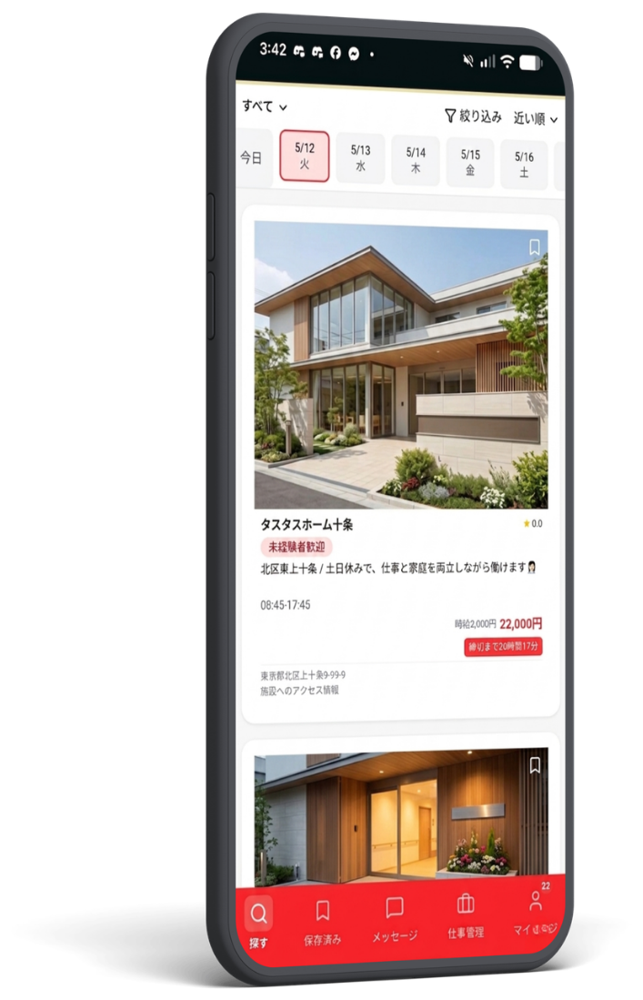

01
スキマ時間を有効活用
1日1時間〜OK！ライフスタイルに合わせて働きたいときだけ働けます。
1日1時間〜OK！ライフスタイルに合わせて働きたいときだけ働けます。
応募からシフト管理、給与確認まですべてアプリで完結。
充実したサポートで、初めての方でも安心して始められます。
カンタン30秒で
無料登録！
希望の条件で
お仕事を検索
最短当日から
お仕事OK！

応募・シフト・給与確認までスマホで完結
半日でサクッと稼げる！お子様が学校の間にピッタリ。
8:30〜12:30（実働4h）日給 8,400円〜
医療処置少なめ！ブランクがある方やゆったり働きたい方に。
10:00〜16:00（実働6h）日給 12,000円〜
基本は待機のみ！休日の空き日程でサクッと稼げます。
9:00〜18:00（実働8h）日給 17,600円〜
カンタンな作業が中心！病院の環境を整える大切なお仕事。
8:30〜17:30（実働8h）日給 11,200円〜
夕方の数時間だけ！近所でサクッと働きたい方にピッタリ。
16:00〜20:00（実働4h）日給 5,400円〜
看護師さんの指示に従って動くだけ。安心スタート。
9:00〜16:00（実働6h）日給 7,800円〜
食事の配膳や見守りがメイン。資格を活かして活躍。
9:00〜18:00（実働8h）日給 12,000円〜
利用者様と一緒にレクを楽しみながら働けます。
9:00〜16:00（実働6h）日給 8,400円〜
夕方の食事介助メイン。短時間で効率よく稼ぎたい方に。
16:00〜20:00（実働4h）日給 5,400円〜